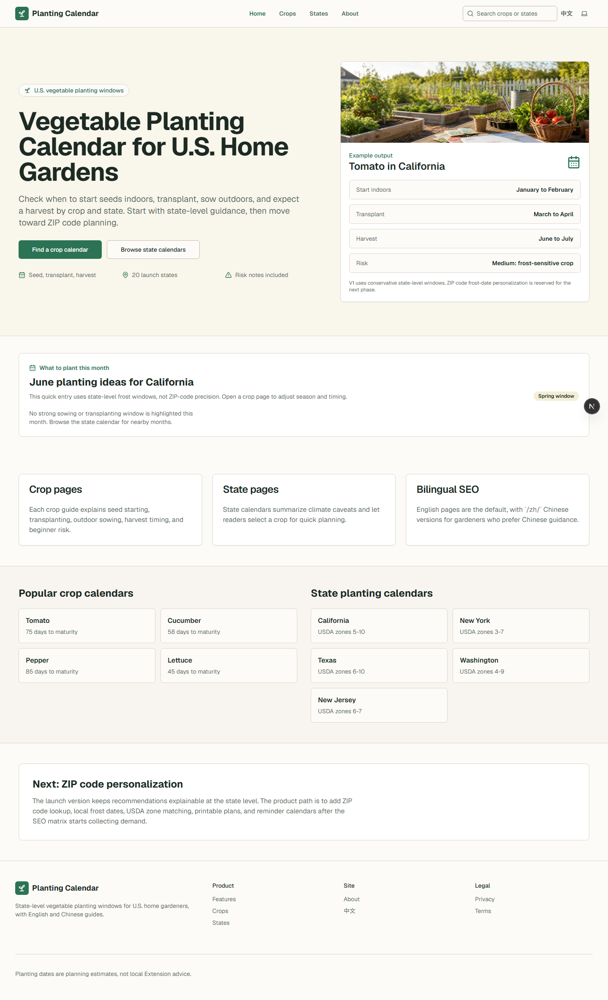
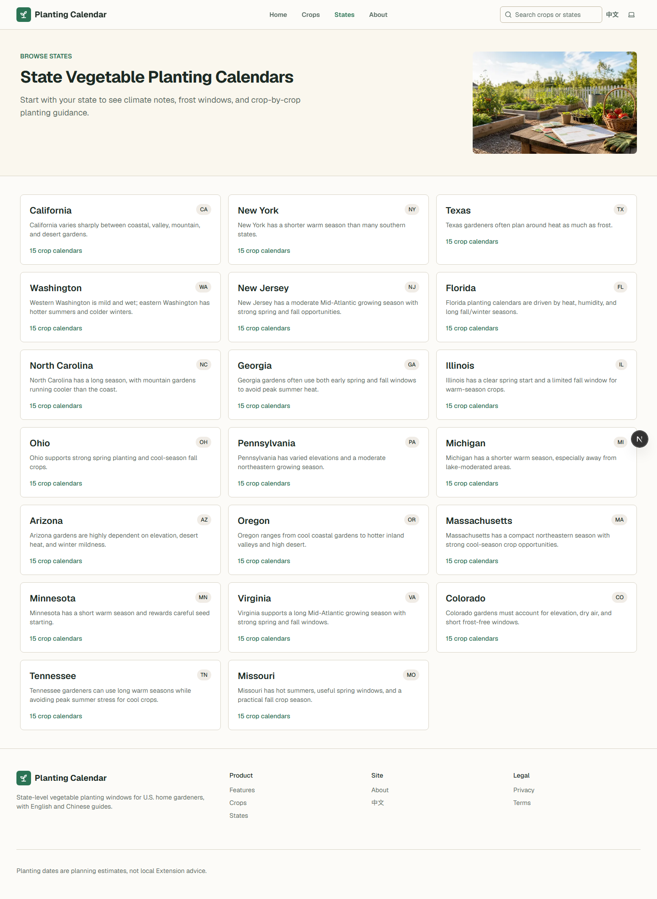
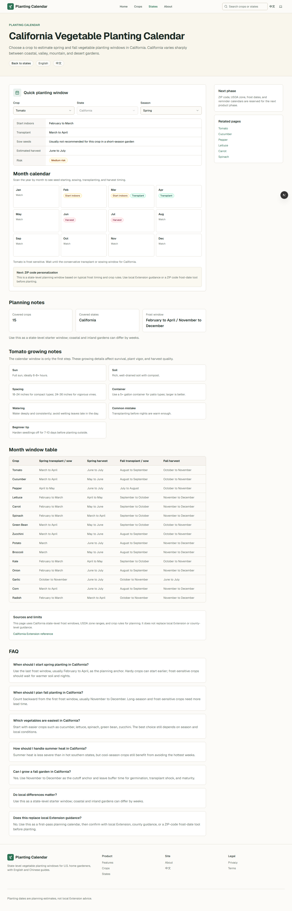
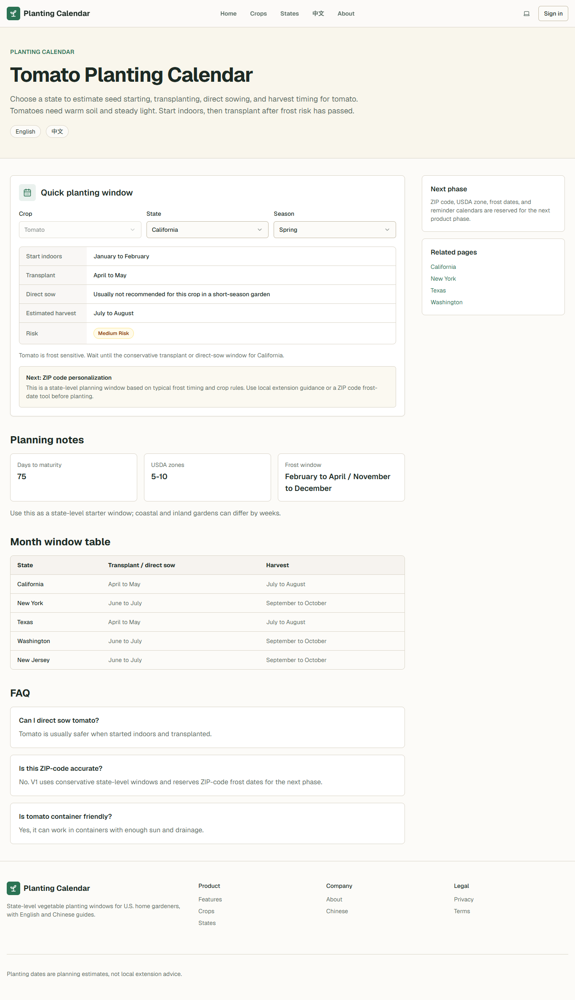

Crop calendars
Dedicated guides for vegetables such as tomato, carrot, lettuce, pepper, cucumber, and more.
Static GitHub Pages overview
Vegetable Planting Calendar helps home gardeners check when to start seeds indoors, transplant, sow outdoors, and expect harvest windows across launch U.S. states.

What the live site provides
Dedicated guides for vegetables such as tomato, carrot, lettuce, pepper, cucumber, and more.
State-level spring and fall planting windows, climate notes, USDA zones, and risk flags.
Specific combinations such as tomato in California or lettuce in Texas for faster planning.
English is the primary interface, with Chinese pages for gardeners who prefer Chinese guidance.
Use cases
Start with a state page, pick a crop, and avoid common timing mistakes around frost or heat.
Compare spring and fall windows before buying seeds, trays, soil, and transplants.
Use the English and Chinese pages to share the same planting plan across family members.
Product screenshots



Changelog
Published this GitHub Pages external link page for project discovery and routing.
Updated crop image coverage and live production SEO configuration for the www domain.
Verified launch pages for crop, state, and crop-by-state planting calendar routes.
FAQ
No. This GitHub Pages site is a static overview page. The live crop calendars, localized pages, and dynamic product routes remain on https://www.vegetableplantingcalendar.com.
GitHub Pages is a good fit for a lightweight project introduction, screenshots, changelog, and external links while the production Next.js site stays on Vercel.
Start at the live homepage, then choose either a crop calendar or a state calendar depending on how you plan your garden.
Ready to plan a garden?